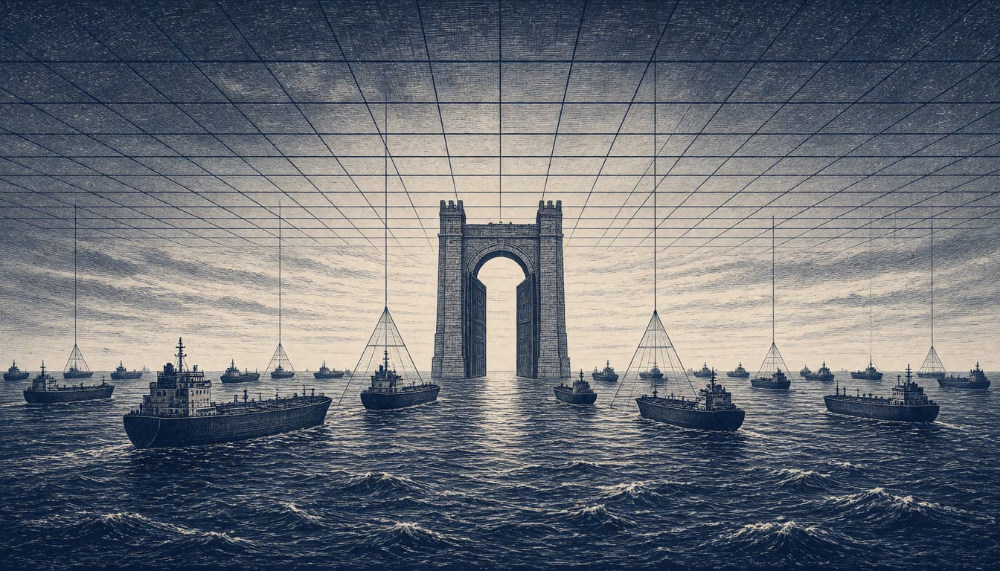

EU ministers to approve sanctions on 145 over Russian war effort
Foreign ministers meet in Brussels on Monday to list targets in the shadow fleet, banking and hybrid activities. The Commission has announced a sanctions office and a crypto task force to support enforcement.

EU foreign ministers meet in Brussels on Monday 16 November to approve further listing measures on, Agence Europe reports, oil refineries and the shadow fleet ecosystem. Ambassadors provisionally agreed on 11 November to impose sanctions on 145 individuals and entities involved in Russia's aggression against Ukraine, cyberattacks and hybrid activities. The Commission has announced a sanctions office and an informal crypto task force to support enforcement.
Bulgaria had First Investment Bank dropped from the list, two Radio Free Europe/Radio Liberty sources in Brussels confirmed. In total, four Russian companies were excluded after Bulgaria, France and Hungary blocked sanctions against them.
Hungary asked for the exclusion of TANEKO, and France asked for that of RESO Kredit, according to Radio Free Europe/Radio Liberty. Around 100 people could be affected, Agence Europe reports, by the additional sanctions measures, particularly those linked to the finance sector, banking, the shadow fleet, disinformation or hybrid activities. The package also targets several companies that support the operations of Russia's shadow fleet, Ukrainska Pravda reports.
The ambassadors' 11 November agreement covers some 50 Russian banks financing the war, Interfax-Ukraine reported, citing European Truth and an EU diplomat familiar with the meeting's results. The Commission said on 6 November that it was working on a twenty-second package, without giving a timetable.
French Minister for European Affairs Benjamin Haddad said on LCI television that the proposals cover 150 additional entities and 50 banks.